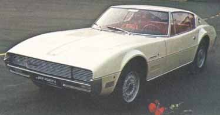
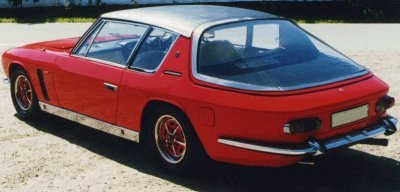

Carrozzeria Vignale · Jensen
Jensen by Vignale
1965 Jensen Nova

Jensen Interceptor

1968 Jensen Interceptor MK 1
| Numbers built | 1000 |
| Years built | 1966-1976 |
| Bodystyle | Vignale |
| Engine | Chrysler V8 |
| Cubic capacity | 6,276 cc |
| Compression ratio | 10:1 |
| Transmission | Torqueflite 3 speed automatic |
| Brakes | Discs all around |
| Bhp | 325 at 4,600 rpm |
| 0-60 mph | 7.3 sec |
Owner: Bo Nilsson
Some words about the Touring/Vignale connection to the styling of the Jensen Interceptor, by Keith Anderson:
In the mid ‘sixties there were political machinations at work within Jensen Motors Ltd, which ultimately lead to the resignations of Richard and Alan Jensen and their Chief of Body design, Eric Neale. This was all over the decision to go to the Italian styling houses for the C-V8 replacement. Chief Engineer Kevin Beattie (he designed the C-V8 chassis which was also used for the Interceptor) was of the opinion that the market that Jensen should be catering for was one that favoured style over mechanical sophistication. He had been impressed with the latest offerings from Ghia, Touring and Vignale, and asked them to submit designs for a new body based on his C-V8 chassis. The design that most pleased Beattie and his colleagues was submitted by Touring of Milan. However, Touring were a small concern (they were also in a shaky financial state), and could not supply bodyshells at any real scale of “production”. Thus, Beattie and Eric Neale visited Vignale, a busy and lively factory, where Eric Neale sat down with one of Vignale’s designers and modified Touring’s original design to suit Vignale’s production processes. Vignale thus became the manufacturer of the Interceptor body, and these bodies (fully painted and trimmed inside) were built in Italy and shipped to West Bromwich in England. Thus, the Interceptor was designed by Touring. Early cars built by Vignale. But always remember, the styling was modified, refined and productionised by Eric Neale.
Information supplied by Keith Anderson.
For more Jensen information: Jensen Cars Homepage. Early Jensen FFs: Vignale and West Bromwich features.